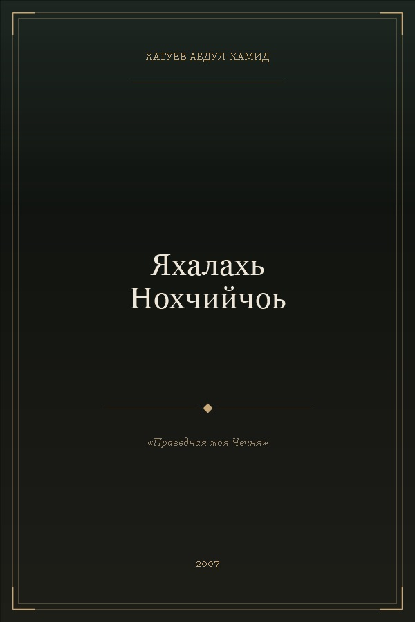
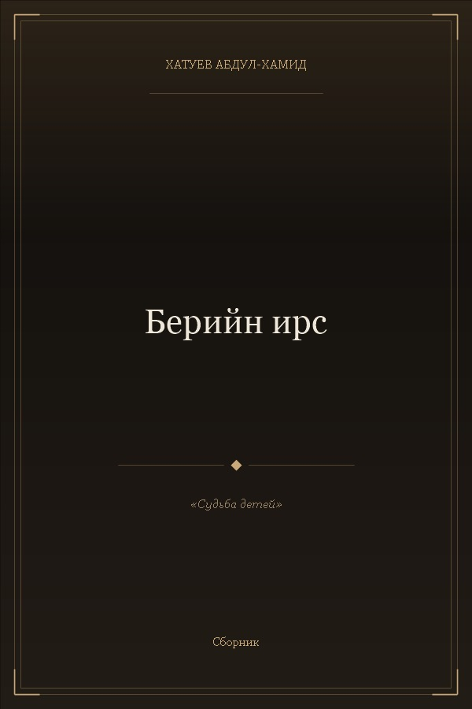
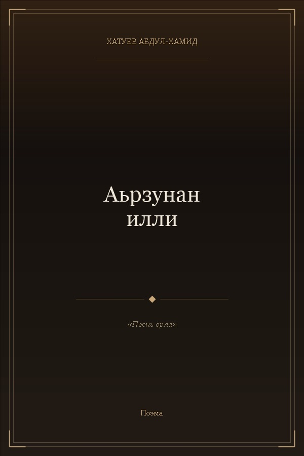
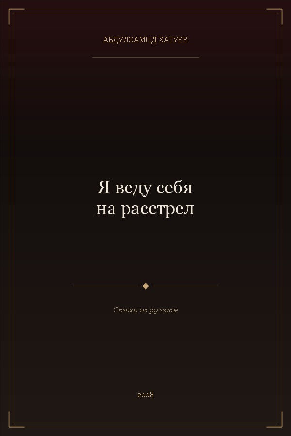
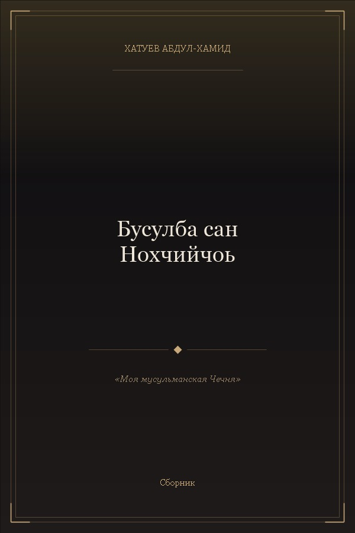

Пять книг, в которых запечатлена душа Чечни — стихи на нохчийн матте и на русском языке. Книги с доступным PDF можно скачать бесплатно.

Один из главных сборников поэта. Стихи, написанные на чеченском языке, — о Родине, вере, судьбе народа. Книга вышла в 2007 году и стала отражением духовного пути автора.

Сборник стихов о детях Чечни, их судьбах и надеждах. Автор пишет с теплом и болью — для тех, кто вырастал в тени войны и должен был найти в себе силы жить.

Поэма о чести, достоинстве и силе духа горского человека. Образ орла — древний символ свободы и гордости чеченского народа — проходит через всё произведение.

Единственный сборник на русском языке. Вышел в 2008 году. Стихи раскрывают внутренний мир поэта: его переживания, судьбу народа, трагедию эпохи — языком, понятным всем.

Сборник, в котором вера и Родина неотделимы. Автор воспевает мусульманскую Чечню с её традициями, кодексом чести «Нохчалла» и вечной духовной силой народа.